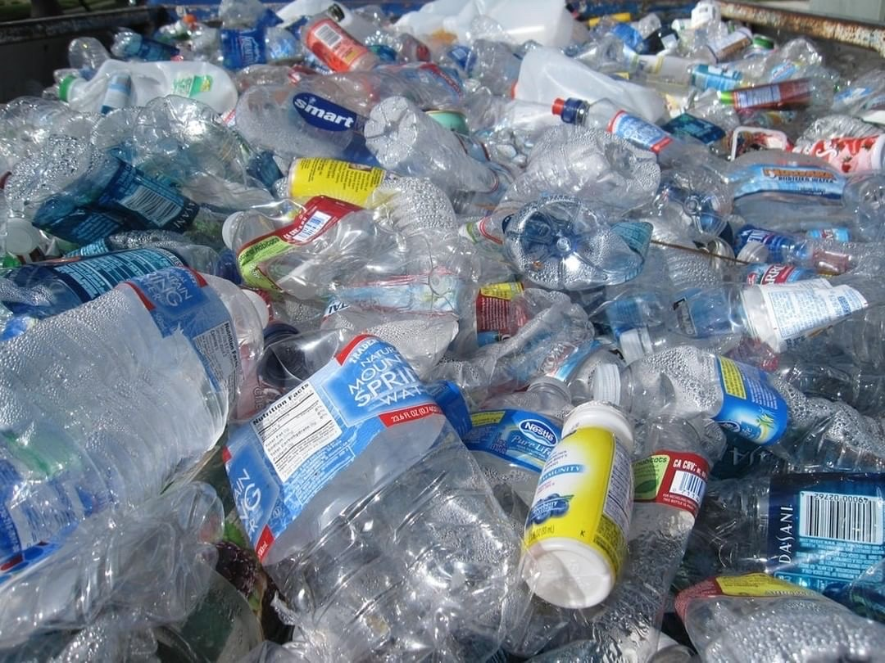

Plastic Bottles Can Now Be Turned Into Vanilla
By Vidisha Jallapuram
This article discusses recent developments in the plastic recycling field, and their potential
implications. Specifically, this article focuses on recycling plastics by turning them into vanilla.
Did you know? The smell of vanilla is known to directly impact the brain and induce calmness. It’s one
one of the most common household ingredients and is also used in perfume manufacture, and hygiene and
beauty products because of its many effects on the hair and skin. According to the Independent, the
market for the chemical is said to reach $724 million by 2025. Recently, scientists at the University of
Edinburgh have discovered a way to turn plastic waste into the infamous chemical flavor compound,
vanillin! Vanillin is the main chemical compound of the extract of the vanilla bean. Today it is mainly
used as a flavouring agent in many things, for perfumes and fragrances in both cleaning products and
candles, in medicines to mask nasty odours or tastes or in sweet foods such as ice cream and chocolate.

Combatting Plastic Pollution
According to the Food and Agriculture Organization of the United Nations, about 8.3 billion tonnes of
plastic has been produced since the 1950s, and only 9% of it has been recycled. Out of all, the biggest
contributor to this pollution problem is single use plastic. Single use plastic is produced and designed to
be thrown away after being used only once. For example, water bottles, bags or takeaway boxes. A full
32% of the 78 million tons of plastic packaging produced annually is left to flow into our oceans; the
equivalent of pouring one garbage truck of plastic into the ocean every minute. What do these plastic
products have in common? Polyethylene terephthalate(PET). PET is a thermoplastic polymer and is
heavily used in manufacturing containers for food or liquid like water bottles or skincare product
containers.
The scientists at Edinburgh utilized past research where they figured out how to use enzymes to break
PET down into terephthalic acid (TA). They then took the TA and used an engineered version of the
common bacteria E. coli bacteria to transform TA into vanillin. In a statement given by Dr. Ellis Crawford
of the Royal Society of Chemistry, he says, ‘‘Using microbes to turn waste plastics, which are harmful to
the environment, into an important commodity and platform molecule with broad applications in
cosmetics and food is a beautiful demonstration of green chemistry.’’ Given that vanilla is such a highly
desirable chemical, this new discovery is an incredible advancement and part of big developments that
could aid in achieving a circular economy. Although vanillin traditionally comes from the extract of
vanilla beans, today around 99% of the substance is produced synthetically with petrochemicals, similar
to the way these scientists at Edinburgh have processed their vanillin. The researchers stated that the
plastic-derived vanilla should be safe to eat, but more tests are needed before it ends up in stores.